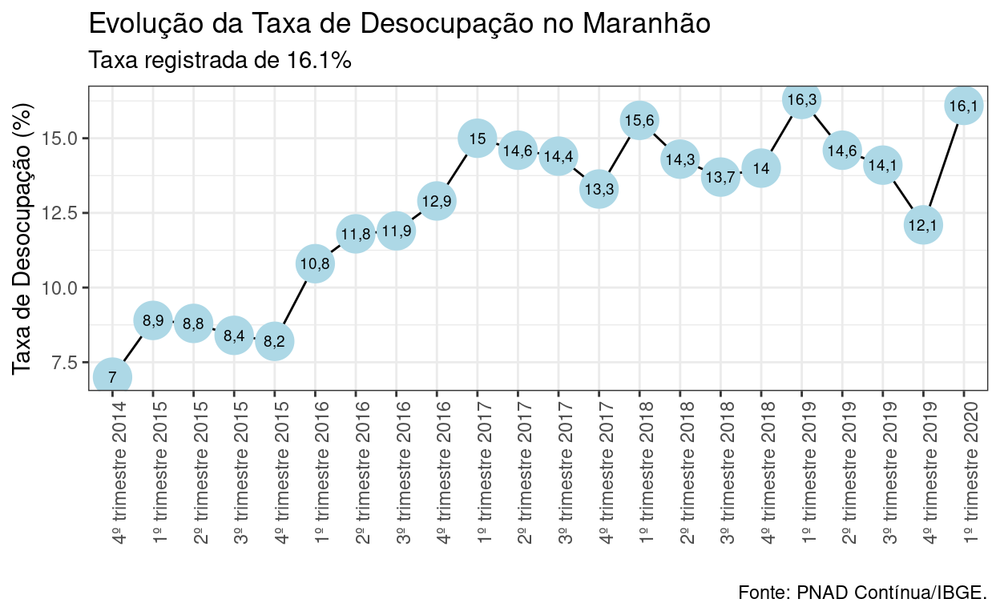

Rápido olhar sobre o mercado de trabalho maranhense
Não é novidade que a pandemia tem gerado uma catástrofe econômica no Brasil e nos estados. O monitoramento do comportamento do mercado de trabalho tornou-se problemático após a pandemia e as mudanças no Cadastro Geral de Empregos e Desempregos (CAGED) após a entrada em vigor do Novo Caged e as alterações na Pesquisa Nacional por Amostra por Domicílio Contínua (Pnad-Contínua) decorrentes da pandemia, que passou a ser realizada por telefone e teve os dados para os estados não disponibilizados por incompatibilidade nas metodologias de coleta dos dados.
Temos então os dados até o 1º trimeste de 2020. O que eles nos mostram?
Vamos dar uma olhada no gráfico abaixo e sua representação das taxas nos estados. Antes, segue o código para coleta e criação do gráfico.
dtaxauf<- get_sidra(api ='/t/4093/n1/all/n3/all/v/1641,4099/p/all/c2/6794/d/v4099%201')
taxa<-dtaxauf %>%
select(`Brasil e Unidade da Federação`, `Variável`, `Valor`, `Trimestre (Código)`) %>%
filter(`Brasil e Unidade da Federação` != "Brasil") %>%
filter(`Variável` == "Taxa de desocupação, na semana de referência, das pessoas de 14 anos ou mais de idade") %>%
filter(`Trimestre (Código)`==202001)
#filter(`Trimestre (Código)` == last(`Trimestre (Código)`)) automatiza para coletar o último valor
taxa<-taxa %>%
select(`Brasil e Unidade da Federação`, `Valor`) %>%
dplyr::rename(UF= `Brasil e Unidade da Federação`, Taxa = `Valor`) %>%
arrange(Taxa)
hcmap("https://code.highcharts.com/mapdata/countries/br/br-all.js", data = taxa, value = "Taxa",
joinBy = c("woe-name", "UF"), name = "Taxa de Desemprego",
dataLabels = list(enabled = TRUE, format = '{point.name}'),
borderColor = "#FAFAFA", borderWidth = 0.1,
tooltip = list(valueDecimals = 1, valueSuffix = "%")) %>%
hc_title(text = "</b>Taxa de desocupação nos Estados</b>")
O mercado de trabalho brasileiro tem sido caracterizado, desde 2014, por altas taxas de desemprego. Essa situação, contudo, é distribuída desigualmente pelo território nacional. Alguns destaques do 1º trimestre de 2020, quando as consequências da pandemia ainda eram incipientes:
A Bahia apresentava a maior taxa de desemprego, 18,7%, sendo seguida pelo Amapá (17,2%);
Os estados do Norte e Nordeste, de forma geral, apresentavam as maiores taxas de desemprego, enquanto os estados do Sul têm obtido melhores resultados.
O Maranhão tinha uma taxa de desemprego de 16.1% no 1º trimestre de 2020, estando no grupo que apresentava as mais altas taxas do país.
Santa Catarina, no Sul, apresentava taxa de desocupação de pleno emprego, de 5,7%, sendo o estado com a menor taxa de desemprego do país.
E no Maranhão, qual foi o comportamento foi a dinâmica do mercado de trabalho?
Nota-se, a partir do gráfico abaixo, que a população sem ocupação no estado do Maranhão teve um aumento no 1º trimestre de 2020 em relação ao 4º trim. de 2019, registrando 16,1% de desempregados. Com isso, a primeira taxa de 2020 interrompeu as três quedas seguidas na taxa de desemprego no Maranhão em 2019.

Alguns Destaques:
A População sem ocupação no Estado do Maranhão teve um aumento no 1º trimestre de 2020 em relação ao 4º trim. de 2019, registrando 16,1% de desempregados. Com isso, a primeira taxa de 2020 interrompeu as três quedas seguidas na taxa de desemprego no Maranhão em 2019.
A população em situação de subocupação por insuficiência de horas trabalhadas no Maranhão no 1º. trimestre de 2020 manteve-se estável, sendo um indicador bastante alto para o estado, sendo 275 mil trabalhadores nessa condição, o que evidencia que há um estoque de força de trabalho no estado que consegue encontrar inserções ocupacionais capazes de suprir sua disponibilidade de trabalhar.
O número de pessoas desocupadas no Maranhão, portanto, registrou alta no 1º trimestre de 2020, chegando a 424 mil pessoas nessa situação.
A Força de Trabalho Potencial, contudo, revela de forma ainda mais intensa a dramaticidade do mercado de trabalho local. Esse indicador agrega as pessoas desocupadas, as que procuraram emprego mas não estavam disponíveis para trabalhar e as que estavam dispostas a trabalhar mas desistiram de procurar, situação chamada de desalento. No estado, são quase 700 mil trabalhadores nessa situação.
Há no Maranhão, portanto, quase 1 milhão de trabalhadores que estão desocupados, em desalento ou trabalhando menos do que gostariam, o que equivale a metade da PEA do estado.
As tendências encontradas nos setores econômicos mostravam que:
O comércio, reparação de veículos automotores e motocicletas continua a ser o principal setor a ocupar a população no Maranhão, tendência observada em toda a série histórica da Pnad Contínua.
A administração, defesa, seguridade social, educação, saúde humana e serviços sociais é o segundo setor que mais gera ocupação no Maranhão, característica estrutural do Estado.
A agricultura, pecuária, produção florestal, pesca e aquicultura teve o número de pessoas ocupadas no setor reduzido drasticamente desde 2012, com a eliminação de 419mil ocupações. Apesar disso, ainda é o 3º setor responsável pelo maior número de ocupados no Estado. Como o setor é importante para amortecer a vulnerabilidade alimentar, é importante análises mais detidas sobre as transformações estruturais que estão ocorrendo no campo maranhense.
O setor da construção ainda é um dos principais a gerar ocupação no estado, apesar da forte crise no setor, como mostrado em nosso relatório especial sobre o setor.
Verifica-se que os empregados no setor privado representam, no 1º trimestre de 2020, o maior contingente de pessoas ocupadas no estado desde 2017, com 832 mil pessoas. Esse número, contudo, inclui os ocupados no setor privado que não possuem vínculo de trabalho formal (com carteira) .
Os ocupados no setor privado sem carteira chegaram a 429 mil, número praticamente igual ao dos ocupados no setor privado com carteira, que no 1º trimestre de 2020 eram 429 mil, ou seja, 50% dos ocupados no setor privado não possuem vínculo formal de trabalho.
O contingente de trabalhadores por conta própria representa o segundo maior grupo, com 724 mil pessoas.
A Administração Pública, com 366 mil ocupados no setor, é um dos mais importantes empregadores, seja com vínculos estatutários ou outras modalidades de contratação.
Há no estado, 155 mil trabalhadores domésticos, sendo que destes 139 mil não têm registro em carteira.
Uma melhor visualização dos dados pode ser encontrada no dashboard disponível aqui.
For attribution, please cite this work as
Teixeira (2021, April 13). GPPDEO - Pesquisa e Ensino: Desemprego no Maranhão. Retrieved from https://gppdeo.org/posts/2021-04-13-desemprego-no-maranho/
BibTeX citation
@misc{teixeira2021desemprego,
author = {Teixeira, Tadeu Gomes},
title = {GPPDEO - Pesquisa e Ensino: Desemprego no Maranhão},
url = {https://gppdeo.org/posts/2021-04-13-desemprego-no-maranho/},
year = {2021}
}